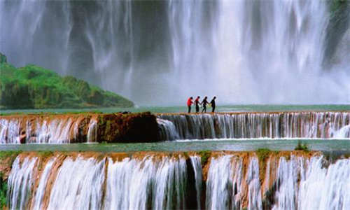
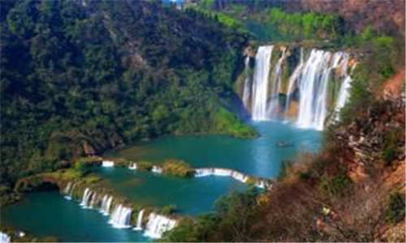
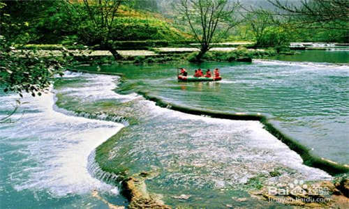
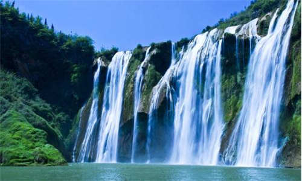
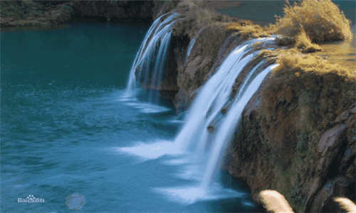
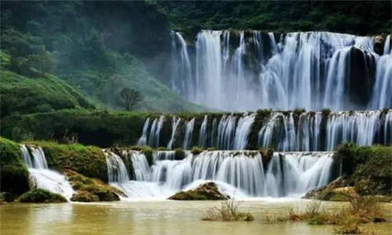

morly旅游网
九龙瀑布群风景区位于广西南宁横县城东北22公里，是横县古十景之一的“三峡悬流”所在地。 九龙河原名喜旧溪，在长约4公里的河道上，凭借地貌差异形成了大小10级瀑布。或雄伟、或险峻、或秀美、或舒缓，美不胜收，绝伦无比。景区景观丰富，景点集中，特点突出，风景迷人；景点集雄、险、奇、秀为一体，组合较好；瀑间浅滩深潭千姿百态、异彩纷呈，景色随季节和水流大 、小变幻无穷。
 钙化台阶
从戏水滩往上至以堵勒大瀑布,有四个钙化台阶呈阶梯状展布,第一台高1一3米、宽70米、长100米,其上灌木丛生,绿草茵茵,河水分成数十股呈散流状从滩面掠源流过,发出“叮咚、叮咚”的悦耳响声优美醉人。
第二台高6米、宽160米,台面长30~60米,其下脚潭翠绿,台面内凹呈弧形,正中一瀑布似银练泻落,跌入潭中溅起朵朵水花,美不胜收。
第三台高11米、宽80米,台面长50米,台面弯曲呈弧形,其上一直径40米的圆形水潭点缀其中,恰似一颗耀眼的明珠,分外美丽。
第四台高4.5米、宽70米,台面长40米,正中一湖潭与大瀑布下的脚潭相连,构成一泓绿水,清冽可口,沁人心脾,台坝两侧涓涓细流碎玉飞花般撒落,令人称羡不已。
九龙第一瀑
也称神龙瀑布，为九龙河上最大的一级瀑布,也是整个景区观景之最。
瀑布高56米,瀑宽112米,坡度角70。瀑面曲折呈弧形,上部瀑帘呈扇形撒开,帘后有一直径10米的水帘洞,瀑下为一半圆形脚潭,深不见底。
丰水季节水流湍急,瀑面宽阔,河水从悬崖泻出,以雷霆万钧之势倾入崖底脚潭,响声如雷,轰振河谷,气势磅礴。 瀑底观之,宛如天河倾泻,似万丈临空飞降,银炼垂空,景色壮丽,脚潭上空玉絮飞花,溅珠结雾,弥漫空中,化为朦朦细雨撒向下游河谷,艳阳辐射,水雾化成五彩长虹,绚丽灿烂,色彩缤纷,身临其境,如入仙境,使人飘飘欲仙,浮想联翩。
水小时瀑布分成左中右四股,似洁白的玉带飘洒飞扬,如冰花临空怒放,煞是好看。 登上瀑顶回头远眺,碧日潭、月牙湖,戏水滩,钙华台阶,蝙蝠洞，两岸峰丛,河边金色稻浪，绿草、灌木等一一跃入眼帘,组成了一幅绝妙的水墨山水画, 美妙绝伦。回头远看,潭潭绿水,石龙漫游瀑两岸峭壁尽收眼底,绿水青山,如诗如画,情景变幻。
每年农历二月二,滇、黔、桂毗邻地区的布依族、彝族、水族和壮族青年男女盛装荟萃瀑布边，对歌择偶,热闹非凡,别具风采的布依族兵器舞、狮子舞、高烧舞、野毛人舞争奇斗妍,浓郁的乡风民俗令人心醉。
《神龙战铜鼓》、《珍珠与马郎》,《黑龙斗白龙》等神话优美动 听,耐人寻味。
 地理环境
九龙瀑布群位于广西横县国营镇龙林场大吾林站境内，距县城48公里，因景区内的九龙山而得名。
九龙又称图九龙（壮音），意为两条龙缠绵在一起，据说很久以前，南海龙王的一双恩爱龙子龙媳，云游落到大吾林站，为当地送雨、送水、造福人间，并产下龙孙六子一女，天长日久，化为九龙山。
瀑布以"群"为特色，在2.5平方公里内分布着十多条落差30多米、宽20多米不等的瀑布，相距为100-300米。
风景区内林木参天、浓绿荫翳、藤条交错、绿潭清澈、溪流潺潺、野趣盎然。 主要景点有：群龙迎宾、双龙戏珠、紫龙相会、九龙入宫、龙女戏珠、神龙庆殿、白龙出潭、金龙垂延、青龙点水、环观林海、密林探幽、赤壁列阵、龙狗巡山等 。
 九龙瀑布群门票路线
九龙瀑布群门票30元预定价30元 点击预定 儿童票20元：身高1.2米—1.4米，1.2米以下免票 预订70岁以上老年票须凭证购买20元，军官票、残疾人票须凭证购买25元预定价
九龙瀑布群开放时间：9：00—18：00
九龙瀑布群地址：广西南宁市横县九龙瀑布森林公园内
九龙瀑布群自驾车路线： 南宁(沿南柳高速公路)——古辣甘棠出口——露圩甘棠——灵竹——九龙瀑布群;全程136KM。
九龙瀑布群乘车路线： 从埌东汽车站坐快班到横县总站，需约30元，发车密度约15分钟一趟，全程需80分钟。再从横州找车到九龙瀑布景区，约60分钟。80+60=约两个半小时即可!
内容整理至网络，如有侵权，请联系我们！1255394075@qq.com